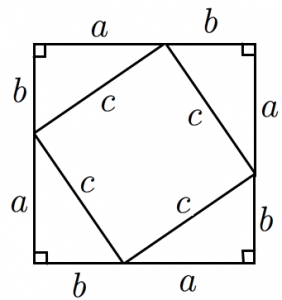

解答・解説4
- (1)
-

-
上図より,大きい正方形の面積\(S\)を二通りで表す。
\(①\)
赤色で示した三角形は直角三角形と全て合同なので,下図のように考える。
図の挿入
大きい正方形の一辺の長さは,\(a+b\)で表すことができる。
つまり \(S=(a+b)^2\) と表すことができる。
\(②\)
中にある正方形の面積\(s_1\)と周りにある直角三角形の面積\(s_2\)を足す。
中にある正方形の一辺は\(c\)である。
よって, \(s_1=c^2\)
\(s_2 = \triangle ABC\)の面積 \( \times 4\) となるので
\(s_2 = \cfrac{1}{2} a b \times 4\)
\(=2ab\)
\(s_1+s_2=c^2+2ab\)
つまり \(S=c^2+2ab\) と表すことができる。
\(①,②\)より
\((a+b)^2 = c^2+2ab\)
\(a^2 + 2ab + b^2 = c^2 +2ab\)
\(a^2 + b^2 = c^2\)
よって,三平方の定理\(a^2+b^2=c^2\)が成立する。
- (2)
-
図の挿入
図より,まず,\(\triangle AHO \equiv \triangle BIO\)を示す。
\(\angle HOB = x \)とする。
\(\angle AOH = \angle BOI = 90^{\circ}-x ―③\)
\(AO = BO ―④\)
\(\angle HAO = \angle IBO = 45^{\circ} ―⑤\)
\(③～⑤\)より,1組の辺とその両端の角がそれぞれ等しいので
\(\triangle AHO \equiv \triangle BIO \)
これより
(四角形\(HBIO\)の面積)
\(=\triangle HBO + \triangle BIO\)
\(=\triangle HBO + \triangle AHO\)
\(=\triangle ABO\)
つまり,四角形\(HBIO\)の面積と,\( \triangle ABO\)の面積は等しいので,\( \triangle ABO \)の面積を求めればよい。
\(\triangle ABO = 6 \times 6 \times \cfrac{1}{4} = 9cm^2\)
となる。